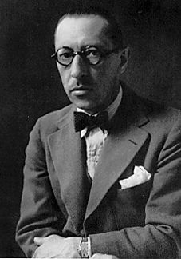

 (Igor Stravinski o Stravinsky; Oranienbaum, Rusia, 1882 - Nueva York, 1971) Compositor ruso nacionalizado francés y, posteriormente, estadounidense. Una de las fechas clave que señalan el nacimiento de la llamada música contemporánea es el 29 de mayo de 1913, día en que se estrenó el ballet de Stravinsky La consagración de la primavera. Su armonía politonal, sus ritmos abruptos y dislocados y su agresiva orquestación provocaron en el público uno de los mayores escándalos de la historia del arte de los sonidos.
Autor de otros dos ballets que habían causado sensación, El pájaro de fuego (la obra que lo dio a conocer internacionalmente en 1910) y Petrushka, el citado día de 1913 Stravinsky se confirmó como el jefe de filas de la nueva escuela musical. Sin embargo, él nunca se consideró un revolucionario; de manera similar a Picasso en el campo de las artes plásticas, el compositor se caracterizó siempre por transitar de un estilo a otro con absoluta facilidad, sin perder por ello su propia personalidad. El ruso, el neoclásico y el dodecafónico son, a grandes rasgos, los tres períodos en los que puede dividirse la carrera compositiva de este maestro, uno de los referentes incuestionables de la música del siglo XX.
Alumno de Nikolai Rimski-Korsakov en San Petersburgo, la oportunidad de darse a conocer se la brindó el empresario Sergei Diaghilev, quien le encargó una partitura para ser estrenada por su compañía, los Ballets Rusos, en su temporada parisiense. El resultado fue El pájaro de fuego, obra en la que se advierte una profunda influencia de su maestro en su concepción general, pese a lo cual apunta ya algunos de los rasgos que definirán el estilo posterior de Stravinsky, como su agudo sentido del ritmo y el color instrumental.
Su rápida evolución culminó en la citada Consagración de la primavera y en otra partitura destinada al ballet, Las bodas, instrumentada para la original combinación de cuatro pianos y percusión, con participación vocal. En estas obras el músico llevó al límite la herencia de la escuela nacionalista rusa hasta prácticamente agotarla.
Su estilo experimentó entonces un giro que desconcertó a sus propios seguidores: en lugar de seguir el camino abierto por estas obras, en 1920 dio a conocer un nuevo ballet, Pulcinella, recreación, a primera vista respetuosa, de la música barroca a partir de composiciones de Giovanni Battista Pergolesi.
Comenzaba así la etapa neoclásica, caracterizada por la revisitación de los lenguajes del pasado, con homenajes a sus compositores más admirados, como Bach (Concierto en re), Tchaikovsky (El beso del hada), Haendel (Oedipus rex), Haydn (Sinfonía en do) o Mozart (La carrera del libertino) y obras tan importantes como el Octeto para instrumentos de viento, la Sinfonía de los salmos o el ballet Apollon Musagète.
En ellas Stravinsky abandonó las armonías disonantes y la brillante orquestación de sus anteriores composiciones para adoptar un estilo más severo y objetivo -el neoclasicismo, de hecho, nació como una oposición al arrebatado subjetivismo del Romanticismo y el expresionismo germánicos-, estilo, sin embargo, que no excluía cierto sentido del humor en su aproximación al pasado.
Con la Sinfonía en tres movimientos y la ópera La carrera del libertino concluye esta etapa, tras la cual Stravinsky volvió a sorprender al adoptar el método dodecafónico sistematizado por su colega y rival Arnold Schönberg, aunque, eso sí, a la muerte de éste. De nuevo un ballet, Agon, señaló la apertura de este nuevo período, en el que sobresalen títulos como Canticum sacrum, Threni, Monumentum pro Gesualdo y Requiem Canticles, ninguno de los cuales ha obtenido el nivel de aceptación de las obras de las dos épocas precedentes. Fallecido en Estados Unidos, sus restos mortales fueron inhumados en Venecia.
{kind=link}